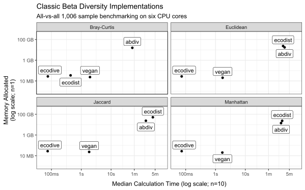

Introduction
State of the Field
This analysis provides a comparative benchmark of R packages designed for calculating standard and phylogenetic metrics of alpha and beta diversity. The primary objective is to evaluate their computational efficiency, with a focus on processing speed and memory allocation. Packages that rely on these foundational libraries as dependencies have been omitted from this study to isolate the performance of the core implementations.
| R Package | Classic alpha/beta | Phylogenetic alpha/beta |
|---|---|---|
| abdiv | Serial R | none |
| adiv | Serial R | Serial R |
| ampvis2 | vegan | Serial R |
| ecodist | Serial C/R | none |
| ecodive | Parallel C | Parallel C |
| entropart | Serial R | none |
| GUniFrac | none | Serial C |
| labdsv | Serial FORTRAN | none |
| parallelDist | Parallel C++ | Parallel C++ |
| philentropy | Serial C++ | none |
| phyloregion | vegan | Serial R |
| phyloseq | vegan | Parallel R |
| picante | vegan | Serial R |
| tabula | Serial R | none |
| vegan | Serial C | none |
Methodology
The bench R package was employed to quantify the
computational runtime and memory allocation for the diversity algorithms
within each of the 15 selected packages. All benchmarks were executed on
a host system with the following hardware and software
configuration:
CPU: 6-Core Intel i5-9600K @ 3.70GHz
RAM: 64.0 GB
OS: Windows 11 Pro (64-bit, Version 24H2, Build 26100.4652)Furthermore, the bench::mark() function was utilized to
verify that the outputs from all benchmarked expressions were
numerically equivalent, ensuring the consistency and comparability of
the results.
Setup
Two standard datasets from the rbiom R package,
hmp50 and gems, were selected for this
evaluation. The hmp50 dataset, which includes 50 samples
and an associated phylogenetic tree, was used to benchmark the
computationally intensive phylogenetic metrics, such as UniFrac and
Faith’s PD. For the traditional diversity metrics, which are
significantly less demanding, the larger gems dataset,
comprising 1,006 samples, was employed.
To account for the heterogeneous input and output formats across the 15 R packages, necessary data transformations were performed. To ensure that the benchmarks exclusively measured the performance of the diversity calculations, these data conversion steps were executed outside of the timed code blocks whenever possible.
Click to reveal R code.
install.packages('pak')
# Tools and Datasets for Benchmarking Report
pak::pkg_install(pkg = c(
'bench', 'dplyr', 'ggplot2', 'ggrepel', 'rbiom' ))
# Diversity Metric Implementations
pak::pkg_install(pkg = c(
'abdiv', 'adiv', 'ecodist', 'ecodive', 'entropart', 'GUniFrac',
'kasperskytte/ampvis2', 'labdsv', 'parallelDist', 'philentropy',
'phyloregion', 'phyloseq', 'picante', 'tabula', 'vegan' ))
# Software Versions
version$version.string
#> [1] "R version 4.5.1 (2025-06-13 ucrt)"
data.frame(ver = sapply(FUN = packageDescription, fields = 'Version', c(
'bench', 'dplyr', 'ggplot2', 'ggrepel', 'rbiom',
'abdiv', 'adiv', 'ecodist', 'ecodive', 'entropart', 'GUniFrac',
'ampvis2', 'labdsv', 'parallelDist', 'philentropy',
'phyloregion', 'phyloseq', 'picante', 'tabula', 'vegan' )))
#> ver
#> bench 1.1.4
#> dplyr 1.1.4
#> ggplot2 3.5.2
#> ggrepel 0.9.6
#> rbiom 2.2.1
#> abdiv 0.2.0
#> adiv 2.2.1
#> ecodist 2.1.3
#> ecodive 1.0.1
#> entropart 1.6-16
#> GUniFrac 1.8
#> ampvis2 2.8.9
#> labdsv 2.1-2
#> parallelDist 0.2.6
#> philentropy 0.9.0
#> phyloregion 1.0.9
#> phyloseq 1.52.0
#> picante 1.8.2
#> tabula 3.3.1
#> vegan 2.7-1
library(bench)
library(ggplot2)
library(ggrepel)
library(dplyr)
(n_cpus <- ecodive::n_cpus())
#> [1] 6
# abdiv only accepts two samples at a time
pairwise <- function (f, data, ...) {
pairs <- utils::combn(ncol(data), 2)
structure(
mapply(
FUN = function (i, j) f(data[,i], data[,j], ...),
i = pairs[1,], j = pairs[2,] ),
class = 'dist',
Labels = colnames(data),
Size = ncol(data),
Diag = FALSE,
Upper = FALSE )
}
# Remove any extraneous attributes from dist objects,
# allowing them to be compared with `all.equal()`.
cleanup <- function (x) {
for (i in setdiff(names(attributes(x)), c('class', 'Labels', 'Size', 'Diag', 'Upper')))
attr(x, i) <- NULL
return (x)
}
# HMP50 dataset has 50 Samples
hmp50 <- rbiom::hmp50
hmp50_phy <- rbiom::convert_to_phyloseq(hmp50)
hmp50_mtx <- rbiom::rescale_cols(as.matrix(hmp50))
hmp50_tmtx <- t(hmp50_mtx)
hmp50_tree <- hmp50$tree
# GEMS dataset has 1006 Samples
gems_mtx <- rbiom::rescale_cols(as.matrix(rbiom::gems))
gems_tmtx <- t(gems_mtx)UniFrac
Here we’ll compare the time and memory taken by the unweighted,
weighted, weight normalized, generalized, and variance adjusted UniFrac
functions from the abdiv,ampvis2
ecodive, GUniFrac, phyloseq,
phyloregion and picante R packages. Each of
the functions will be run 10 times to time them for speed, and 1 time to
analyze memory usage.
Click to reveal R code.
## Unweighted UniFrac
u_unifrac_res <- rbind(
local({
# cluster for phyloseq
cl <- parallel::makeCluster(n_cpus)
doParallel::registerDoParallel(cl)
on.exit(parallel::stopCluster(cl))
bench::mark(
iterations = 10,
'abdiv' = cleanup(pairwise(abdiv::unweighted_unifrac, hmp50_mtx, hmp50_tree)),
'ecodive' = cleanup(ecodive::unweighted_unifrac(hmp50_mtx, hmp50_tree)),
'GUniFrac' = cleanup(as.dist(GUniFrac::GUniFrac(hmp50_tmtx, hmp50_tree, alpha=1, verbose=FALSE)[[1]][,,2])),
'phyloregion' = cleanup(phyloregion::unifrac(hmp50_tmtx, hmp50_tree)),
'phyloseq' = cleanup(phyloseq::UniFrac(hmp50_phy, weighted=FALSE, normalized=FALSE, parallel=TRUE)),
'picante' = cleanup(picante::unifrac(hmp50_tmtx, hmp50_tree)) )
}),
# ampvis2 conflicts with phyloseq cluster, so run separately
bench::mark(
iterations = 10,
'ampvis2' = {
cleanup(ampvis2:::dist.unifrac(hmp50_mtx, hmp50_tree, weighted=FALSE, normalise=FALSE, num_threads=n_cpus))
doParallel::stopImplicitCluster() } )
)
u_unifrac_res[,1:9]
#> # A tibble: 5 × 13
#> expression min median `itr/sec` mem_alloc `gc/sec` n_itr n_gc total_time
#> <bch:expr> <bch:tm> <bch:tm> <dbl> <bch:byt> <dbl> <int> <dbl> <bch:tm>
#> 1 abdiv 13.84s 14.38s 0.0676 20.1GB 1.87 10 277 2.46m
#> 2 ecodive 5.19ms 5.31ms 184. 770.5KB 0 10 0 54.23ms
#> 3 GUniFrac 77.89ms 80.4ms 11.7 92.1MB 1.17 10 1 858.32ms
#> 4 phyloseq 292.07ms 327.01ms 2.49 49.9MB 0 10 0 4.02s
#> 5 ampvis2 3.36s 3.44s 0.288 49.8MB 0.0320 9 1 31.29s
ggplot(u_unifrac_res, aes(x = median, y = mem_alloc)) +
geom_point() +
geom_label_repel(aes(label = as.character(expression))) +
labs(
title = 'Unweighted UniFrac Implementations',
subtitle = '50 sample all-vs-all benchmarking on six CPU cores',
x = 'Median Calculation Time (log scale; n=10)',
y = 'Memory Allocated\n(log scale)' ) +
theme_bw()
## Weighted UniFrac
w_unifrac_res <- rbind(
local({
# cluster for phyloseq
cl <- parallel::makeCluster(n_cpus)
doParallel::registerDoParallel(cl)
on.exit(parallel::stopCluster(cl))
bench::mark(
iterations = 10,
'abdiv' = cleanup(pairwise(abdiv::weighted_unifrac, hmp50_mtx, hmp50_tree)),
'ecodive' = cleanup(ecodive::weighted_unifrac(hmp50_mtx, hmp50_tree)),
'phyloseq' = cleanup(phyloseq::UniFrac(hmp50_phy, weighted=TRUE, normalized=FALSE, parallel=TRUE)) )
}),
# ampvis2 conflicts with phyloseq cluster, so run separately
bench::mark(
iterations = 10,
'ampvis2' = {
cleanup(ampvis2:::dist.unifrac(hmp50_mtx, hmp50_tree, weighted=TRUE, normalise=FALSE, num_threads=n_cpus))
doParallel::stopImplicitCluster() } )
)
## Weighted Normalized UniFrac
wn_unifrac_res <- rbind(
local({
# cluster for phyloseq
cl <- parallel::makeCluster(n_cpus)
doParallel::registerDoParallel(cl)
on.exit(parallel::stopCluster(cl))
bench::mark(
iterations = 10,
'abdiv' = cleanup(pairwise(abdiv::weighted_normalized_unifrac, hmp50_mtx, hmp50_tree)),
'ecodive' = cleanup(ecodive::normalized_unifrac(hmp50_mtx, hmp50_tree)),
'GUniFrac' = cleanup(as.dist(GUniFrac::GUniFrac(hmp50_tmtx, hmp50_tree, alpha=1, verbose=FALSE)[[1]][,,1])),
'phyloseq' = cleanup(phyloseq::UniFrac(hmp50_phy, weighted=TRUE, normalized=TRUE, parallel=TRUE)) )
}),
# ampvis2 conflicts with phyloseq cluster, so run separately
bench::mark(
iterations = 10,
'ampvis2' = {
cleanup(ampvis2:::dist.unifrac(hmp50_mtx, hmp50_tree, weighted=TRUE, normalise=TRUE, num_threads=n_cpus))
doParallel::stopImplicitCluster() } )
)
## Weighted Normalized UniFrac
g_unifrac_res <- rbind(
local({
# cluster for phyloseq
cl <- parallel::makeCluster(n_cpus)
doParallel::registerDoParallel(cl)
on.exit(parallel::stopCluster(cl))
bench::mark(
iterations = 10,
'abdiv' = cleanup(pairwise(abdiv::generalized_unifrac, hmp50_mtx, hmp50_tree, alpha=0.5)),
'ecodive' = cleanup(ecodive::generalized_unifrac(hmp50_mtx, hmp50_tree, alpha=0.5)),
'GUniFrac' = cleanup(as.dist(GUniFrac::GUniFrac(hmp50_tmtx, hmp50_tree, alpha=0.5, verbose=FALSE)[[1]][,,1])) )
})
)
## Variance Adjusted UniFrac
va_unifrac_res <- rbind(
local({
# cluster for phyloseq
cl <- parallel::makeCluster(n_cpus)
doParallel::registerDoParallel(cl)
on.exit(parallel::stopCluster(cl))
bench::mark(
iterations = 10,
'abdiv' = cleanup(pairwise(abdiv::variance_adjusted_unifrac, hmp50_mtx, hmp50_tree)),
'ecodive' = cleanup(ecodive::variance_adjusted_unifrac(hmp50_mtx, hmp50_tree)) )
})
)
unifrac_res <- bind_rows(
mutate(u_unifrac_res, `UniFrac Variant` = 'Unweighted'),
mutate(w_unifrac_res, `UniFrac Variant` = 'Weighted'),
mutate(wn_unifrac_res, `UniFrac Variant` = 'Weighted Normalized'),
mutate(g_unifrac_res, `UniFrac Variant` = 'Generalized'),
mutate(va_unifrac_res, `UniFrac Variant` = 'Variance Adjusted') ) %>%
mutate(Package = as.character(expression)) %>%
select(Package, `UniFrac Variant`, median, mem_alloc) %>%
arrange(Package)
print(unifrac_res, n = 21)
#> # A tibble: 21 × 4
#> Package `UniFrac Variant` median mem_alloc
#> <chr> <chr> <bch:tm> <bch:byt>
#> 1 GUniFrac Unweighted 77.43ms 113.4MB
#> 2 GUniFrac Weighted Normalized 78.29ms 92.15MB
#> 3 GUniFrac Generalized 75.25ms 92.15MB
#> 4 abdiv Unweighted 14.36s 20.05GB
#> 5 abdiv Weighted 13.61s 20.02GB
#> 6 abdiv Weighted Normalized 13.59s 20.03GB
#> 7 abdiv Generalized 13.72s 20.18GB
#> 8 abdiv Variance Adjusted 15.57s 24.46GB
#> 9 ampvis2 Unweighted 3.31s 53.44MB
#> 10 ampvis2 Weighted 3.25s 49.2MB
#> 11 ampvis2 Weighted Normalized 3.3s 49.34MB
#> 12 ecodive Unweighted 3.94ms 1.01MB
#> 13 ecodive Weighted 3.46ms 779.72KB
#> 14 ecodive Weighted Normalized 3.82ms 779.73KB
#> 15 ecodive Generalized 5.59ms 799.3KB
#> 16 ecodive Variance Adjusted 4.12ms 779.73KB
#> 17 phyloregion Unweighted 6.35ms 146.44MB
#> 18 phyloseq Unweighted 290.5ms 50.87MB
#> 19 phyloseq Weighted 287.27ms 49.4MB
#> 20 phyloseq Weighted Normalized 291.59ms 49.55MB
#> 21 picante Unweighted 2.43s 1.79GB
# How much faster and more memory efficient is ecodive?
plyr::ddply(unifrac_res, as.name('UniFrac Variant'), function (x) {
x[['median']] <- as.numeric(x[['median']])
x[['mem_alloc']] <- as.numeric(x[['mem_alloc']])
ecodive <- as.list(x[x[['Package']] == 'ecodive',])
x <- x[x[['Package']] != 'ecodive',]
data.frame(
speed = paste0(paste(collapse=' - ', round(range(x$median / ecodive$median))), 'x'),
memory = paste0(paste(collapse=' - ', round(range(x$mem_alloc / ecodive$mem_alloc))), 'x') )
})
#> UniFrac Variant speed memory
#> 1 Generalized 13 - 2454x 118 - 26475x
#> 2 Unweighted 2 - 3647x 50 - 20248x
#> 3 Variance Adjusted 3776 - 3776x 32891 - 32891x
#> 4 Weighted 83 - 3931x 65 - 26922x
#> 5 Weighted Normalized 20 - 3555x 65 - 26934x
ggplot(unifrac_res, aes(x = median, y = mem_alloc)) +
geom_point(aes(shape = `UniFrac Variant`), size = 2) +
geom_label_repel(
data = ~subset(., `UniFrac Variant` == 'Unweighted'),
mapping = aes(label = Package),
box.padding = 0.4,
min.segment.length = Inf ) +
scale_shape(solid = FALSE) +
scale_y_log10(labels = scales::label_bytes()) +
labs(
title = 'UniFrac Implementations',
subtitle = 'All-vs-all 50 sample benchmarking on six CPU cores',
x = 'Median Calculation Time (log scale; n=10)',
y = 'Memory Allocated\n(log scale; n=1)' ) +
theme_bw(base_size = 12) +
theme(axis.title.x = element_text(margin = margin(t = 10)))
ecodive demonstrates substantial performance gains for
UniFrac, being 2 to 3,900x faster and using 50 - 32,000x less memory.
Classic Beta Diversity
Here we’ll benchmark the Bray-Curtis, Euclidean, Jaccard, and
Manhattan classic beta diversity algorithms from the abdiv,
ecodive, ecodist, and vegan R
packages. Each of the functions will be run 10 times to time them for
speed, and 1 time to analyze memory usage.
Click to reveal R code.
bray_curtis_res <- bench::mark(
iterations = 10,
'abdiv' = cleanup(pairwise(abdiv::bray_curtis, gems_mtx)),
'ecodist' = cleanup(ecodist::bcdist(gems_tmtx)),
'ecodive' = cleanup(ecodive::bray(gems_mtx, rescale = FALSE)),
'labdsv' = cleanup(labdsv::dsvdis(gems_tmtx, 'bray/curtis')),
'parallelDist' = cleanup(parallelDist::parallelDist(gems_tmtx, 'bray')),
'philentropy' = cleanup(philentropy::distance(gems_tmtx, 'sorensen', test.na = FALSE, use.row.names = TRUE, as.dist.obj = TRUE, mute.message = TRUE)),
'tabula' = cleanup(1 - pairwise(tabula::index_bray, gems_mtx)),
'vegan' = cleanup(vegan::vegdist(gems_tmtx, 'bray')) )
jaccard_res <- bench::mark(
iterations = 10,
'abdiv' = cleanup(pairwise(abdiv::jaccard, gems_mtx)),
'ecodist' = cleanup(ecodist::distance(gems_tmtx, 'jaccard')),
'ecodive' = cleanup(ecodive::jaccard(gems_mtx, rescale = FALSE)),
'parallelDist' = cleanup(parallelDist::parallelDist(gems_tmtx, 'binary')),
'philentropy' = cleanup(philentropy::distance(gems_tmtx > 0, 'jaccard', test.na = FALSE, use.row.names = TRUE, as.dist.obj = TRUE, mute.message = TRUE)),
'phyloregion' = cleanup(phyloregion::beta_diss(gems_tmtx, 'jaccard')$beta.jac),
'stats' = cleanup(stats::dist(gems_tmtx, 'binary')),
'vegan' = cleanup(vegan::vegdist(gems_tmtx, 'jaccard', binary = TRUE)) )
manhattan_res <- bench::mark(
iterations = 10,
'abdiv' = cleanup(pairwise(abdiv::manhattan, gems_mtx)),
'ecodist' = cleanup(ecodist::distance(gems_tmtx, 'manhattan')),
'ecodive' = cleanup(ecodive::manhattan(gems_mtx, rescale = FALSE)),
'parallelDist' = cleanup(parallelDist::parallelDist(gems_tmtx, 'manhattan')),
'philentropy' = cleanup(philentropy::distance(gems_tmtx, 'manhattan', test.na = FALSE, use.row.names = TRUE, as.dist.obj = TRUE, mute.message = TRUE)),
'stats' = cleanup(stats::dist(gems_tmtx, 'manhattan')),
'vegan' = cleanup(vegan::vegdist(gems_tmtx, 'manhattan')) )
euclidean_res <- bench::mark(
iterations = 10,
'abdiv' = cleanup(pairwise(abdiv::euclidean, gems_mtx)),
'ecodist' = cleanup(ecodist::distance(gems_tmtx, 'euclidean')),
'ecodive' = cleanup(ecodive::euclidean(gems_mtx, rescale = FALSE)),
'parallelDist' = cleanup(parallelDist::parallelDist(gems_tmtx, 'euclidean')),
'philentropy' = cleanup(philentropy::distance(gems_tmtx, 'euclidean', test.na = FALSE, use.row.names = TRUE, as.dist.obj = TRUE, mute.message = TRUE)),
'stats' = cleanup(stats::dist(gems_tmtx, 'euclidean')),
'vegan' = cleanup(vegan::vegdist(gems_tmtx, 'euclidean')) )
bdiv_res <- bind_rows(
mutate(bray_curtis_res, Metric = 'Bray-Curtis'),
# mutate(jaccard_res, Metric = 'Jaccard'),
# mutate(manhattan_res, Metric = 'Manhattan'),
# mutate(euclidean_res, Metric = 'Euclidean')
) %>%
mutate(Package = as.character(expression)) %>%
select(Package, Metric, median, mem_alloc) %>%
arrange(Package)
print(bdiv_res, n = 30)
#> # A tibble: 30 × 4
#> Package Metric median mem_alloc
#> <chr> <chr> <bch:tm> <bch:byt>
#> 1 abdiv Bray-Curtis 11.5s 20.43GB
#> 2 abdiv Jaccard 1.83m 24.89GB
#> 3 abdiv Manhattan 2.9m 17.52GB
#> 4 abdiv Euclidean 2.35m 17.52GB
#> 5 ecodist Bray-Curtis 482.5ms 29.25MB
#> 6 ecodist Jaccard 3.04m 47.89GB
#> 7 ecodist Manhattan 2.14m 21.8GB
#> 8 ecodist Euclidean 2.07m 21.8GB
#> 9 ecodive Bray-Curtis 115.72ms 20.41MB
#> 10 ecodive Jaccard 100.5ms 14.52MB
#> 11 ecodive Manhattan 156.29ms 20.42MB
#> 12 ecodive Euclidean 143.38ms 20.42MB
#> 13 labdsv Bray-Curtis 1.13s 63.94MB
#> 14 parallelDist Bray-Curtis 258.71ms 4.02MB
#> 15 parallelDist Jaccard 317.93ms 3.86MB
#> 16 parallelDist Manhattan 163.51ms 3.86MB
#> 17 parallelDist Euclidean 158.62ms 3.86MB
#> 18 philentropy Bray-Curtis 11.2s 14.65GB
#> 19 philentropy Jaccard 1.89m 17.6GB
#> 20 philentropy Manhattan 2.18m 14.65GB
#> 21 philentropy Euclidean 2.3m 14.65GB
#> 22 phyloregion Jaccard 141.15ms 193.92MB
#> 23 stats Jaccard 3.02s 3.86MB
#> 24 stats Manhattan 2.21s 3.86MB
#> 25 stats Euclidean 2.22s 3.86MB
#> 26 tabula Bray-Curtis 21.77s 20.44GB
#> 27 vegan Bray-Curtis 2.63s 12.6MB
#> 28 vegan Jaccard 1.95s 59.69MB
#> 29 vegan Manhattan 1.61s 9.64MB
#> 30 vegan Euclidean 1.63s 9.64MB
# How much faster and more memory efficient is ecodive?
plyr::ddply(bdiv_res, 'Metric', function (x) {
x[['median']] <- as.numeric(x[['median']])
x[['mem_alloc']] <- as.numeric(x[['mem_alloc']])
ecodive <- as.list(x[x[['Package']] == 'ecodive',])
x <- x[x[['Package']] != 'ecodive',]
data.frame(
speed = paste0(paste(collapse=' - ', round(range(x$median / ecodive$median))), 'x'),
memory = paste0(paste(collapse=' - ', round(range(x$mem_alloc / ecodive$mem_alloc))), 'x') )
})
#> Metric speed memory
#> 1 Bray-Curtis 6 - 680x 1 - 571x
#> 2 Euclidean 24 - 2825x 1 - 849x
#> 3 Jaccard 25 - 3359x 1 - 1865x
#> 4 Manhattan 23 - 2340x 1 - 849x
ggplot(bdiv_res, aes(x = median, y = mem_alloc)) +
geom_point() +
facet_wrap('Metric', scales = 'fixed') +
geom_label_repel(aes(label = Package), direction = 'y') +
bench::scale_x_bench_time(limits = c(.05, 500), breaks = c(.1, 1, 10, 60, 300)) +
scale_y_log10(limits = 10^c(6,11.5), labels = scales::label_bytes()) +
labs(
title = 'Classic Beta Diversity Implementations',
subtitle = 'All-vs-all 1,006 sample benchmarking on six CPU cores',
x = 'Median Calculation Time (log scale; n=10)',
y = 'Memory Allocated\n(log scale; n=1)' ) +
theme_bw(base_size = 12) +
theme(axis.title.x = element_text(margin = margin(t = 10)))
ecodive is 6 to 2,300x faster and uses 1 to 1,800x less
memory.
Alpha Diversity
Last, we’ll compare the Shannon, Simpson, and Faith alpha diversity
implementations from the abdiv, ecodive,
entropart, phyloregion, and vegan
R packages. Faith’s phylogenetic diversity metric will be run on 50
samples, while Shannon and Simpson metrics will be run on 1,006
samples.
Click to reveal R code.
shannon_res <- bench::mark(
iterations = 10,
'abdiv' = apply(gems_mtx, 2L, abdiv::shannon),
'adiv' = adiv::speciesdiv(gems_tmtx, 'Shannon')[,1],
'ecodive' = ecodive::shannon(gems_mtx),
'entropart' = apply(gems_mtx, 2L, entropart::Shannon, CheckArguments = FALSE),
'vegan' = vegan::diversity(gems_tmtx, 'shannon') )
simpson_res <- bench::mark(
iterations = 10,
check = FALSE, # entropart is off by a small bit
'abdiv' = apply(gems_mtx, 2L, abdiv::simpson),
'adiv' = adiv::speciesdiv(gems_tmtx, 'GiniSimpson')[,1],
'ecodive' = ecodive::simpson(gems_mtx),
'entropart' = apply(gems_mtx, 2L, entropart::Simpson, CheckArguments = FALSE),
'vegan' = vegan::diversity(gems_tmtx, 'simpson') )
faith_res <- bench::mark(
iterations = 10,
check = FALSE, # entropart has incorrect output on non-ultrametric tree
'abdiv' = apply(hmp50_mtx, 2L, abdiv::faith_pd, hmp50_tree),
'adiv' = apply(hmp50_mtx, 2L, \(x) adiv::EH(hmp50_tree, rownames(hmp50_mtx)[x > 0])),
'ecodive' = ecodive::faith(hmp50_mtx, hmp50_tree),
'entropart' = apply(hmp50_mtx, 2L, entropart::PDFD, hmp50_tree, CheckArguments = FALSE),
'phyloregion' = phyloregion::PD(hmp50_tmtx, hmp50_tree) )
adiv_res <- bind_rows(
mutate(shannon_res, Metric = 'Shannon x 1006'),
mutate(simpson_res, Metric = 'Simpson x 1006'),
mutate(faith_res, Metric = 'Faith PD x 50') ) %>%
mutate(Package = as.character(expression)) %>%
select(Package, Metric, median, mem_alloc) %>%
arrange(Package)
adiv_res
#> # A tibble: 15 × 4
#> Package Metric median mem_alloc
#> <chr> <chr> <bch:tm> <bch:byt>
#> 1 abdiv Shannon x 1006 67.06ms 89.5MB
#> 2 abdiv Simpson x 1006 14.77ms 26.75MB
#> 3 abdiv Faith PD x 50 490.64ms 651.37MB
#> 4 adiv Shannon x 1006 40.42ms 128.1MB
#> 5 adiv Simpson x 1006 34.19ms 53.18MB
#> 6 adiv Faith PD x 50 1.78s 488.78MB
#> 7 ecodive Shannon x 1006 7.53ms 14.74MB
#> 8 ecodive Simpson x 1006 7.48ms 14.72MB
#> 9 ecodive Faith PD x 50 684.95µs 749.23KB
#> 10 entropart Shannon x 1006 1.34s 296.1MB
#> 11 entropart Simpson x 1006 25.07ms 21.48MB
#> 12 entropart Faith PD x 50 29.48s 23.95GB
#> 13 phyloregion Faith PD x 50 2.91ms 1.93MB
#> 14 vegan Shannon x 1006 59.3ms 62.2MB
#> 15 vegan Simpson x 1006 39.69ms 56.27MB
# How much faster and more memory efficient is ecodive?
plyr::ddply(adiv_res, 'Metric', function (x) {
x[['median']] <- as.numeric(x[['median']])
x[['mem_alloc']] <- as.numeric(x[['mem_alloc']])
ecodive <- as.list(x[x[['Package']] == 'ecodive',])
x <- x[x[['Package']] != 'ecodive',]
data.frame(
speed = paste0(paste(collapse=' - ', round(range(x$median / ecodive$median))), 'x'),
memory = paste0(paste(collapse=' - ', round(range(x$mem_alloc / ecodive$mem_alloc))), 'x') )
})
#> Metric speed memory
#> 1 Faith PD x 50 4 - 43038x 3 - 33517x
#> 2 Shannon x 1006 5 - 178x 4 - 20x
#> 3 Simpson x 1006 2 - 5x 1 - 4x
ggplot(adiv_res, aes(x = median, y = mem_alloc)) +
geom_point(size = 2) +
geom_label_repel(aes(label = Package)) +
facet_wrap('Metric', nrow = 1, scales = 'free') +
scale_y_log10(labels = scales::label_bytes()) +
labs(
title = 'Alpha Diversity Implementations',
subtitle = '50 or 1,006 sample benchmarking on six CPU cores',
x = 'Median Calculation Time (log scale; n=10)',
y = 'Memory Allocated\n(log scale; n=1)' ) +
theme_bw(base_size = 12) +
theme(axis.title.x = element_text(margin = margin(t = 10)))
ecodive is 2 to 43,000x faster and uses 1 to 33,000x
less memory.